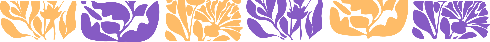

When was the last time you noticed a plant?
Most of us live in cities full of other people, where there is little space for nature to exist alongside us. But plants are still all around us. Take a look out your window. What trees do you see? When you’re walking to school or work, what flowers can you find growing through the cracks?
These leafy, green organisms — scientifically known as Flora — have been shaping the planet we call home for millions of years. The land we walk on, the air we breathe, the water we drink.
But all this is changing.
Climate change is forcing our Flora to change: hotter temperatures, unpredictable rainfall, more floods. Deforestation to build cities, roads and factories. Habitat degradation because of war and resource exploitation. All of these things are putting pressure on Flora but in spite of it all, our leafy relatives show resilience.
So, take a moment to notice a plant, a flower or a tree. What do you see?
This competition is a celebration of Flora — its past, present and future — and the deep connection that we share with our natural world.
Click here to find out more about entry requirements and key dates!

Quan va ser l’última vegada que et vas fixar en una planta?
La majoria de nosaltres vivim en ciutats plenes d’altres persones, on hi ha poc espai perquè la natura pugui existir al nostre costat. Però les plantes continuen sent arreu nostre. Mira per la finestra. Quins arbres veus? Quan camines cap a l’escola o la feina, quines flors pots trobar creixent entre les esquerdes?
Aquests organismes frondosos i verds — coneguts científicament com a Flora — han estat modelant el planeta que anomenem casa durant milions d’anys. La terra que trepitgem, l’aire que respirem, l’aigua que bevem.
Però tot això està canviant.
El canvi climàtic està forçant la nostra Flora a canviar: temperatures més altes, pluges imprevisibles, més inundacions. La desforestació per construir ciutats, carreteres i fàbriques. La degradació dels hàbitats a causa de la guerra i l’explotació de recursos. Tot això exerceix pressió sobre la Flora, però malgrat tot, els nostres parents frondosos demostren resiliència.
Així doncs, pren-te un moment per observar una planta, una flor o un arbre. Què hi veus?
Aquest concurs és una celebració de la Flora — el seu passat, present i futur — i de la profunda connexió que compartim amb el nostre món natural.
Fes clic aquí per obtenir més informació sobre els requisits de participació i les dates clau!

¿Cuándo fue la última vez que te fijaste en una planta?
La mayoría de nosotros vivimos en ciudades llenas de otras personas, donde hay poco espacio para que la naturaleza exista junto a nosotros. Pero las plantas siguen estando a nuestro alrededor. Mira por la ventana. ¿Qué árboles ves? Cuando caminas hacia la escuela o el trabajo, ¿qué flores puedes encontrar creciendo entre las grietas?
Estos organismos frondosos y verdes — conocidos científicamente como Flora — han estado dando forma al planeta que llamamos hogar durante millones de años. La tierra que pisamos, el aire que respiramos, el agua que bebemos.
Pero todo esto está cambiando.
El cambio climático está obligando a nuestra Flora a transformarse: temperaturas más altas, lluvias impredecibles, más inundaciones. La deforestación para construir ciudades, carreteras y fábricas. La degradación de los hábitats a causa de la guerra y la explotación de recursos. Todo esto está ejerciendo presión sobre la Flora, pero a pesar de todo, nuestros parientes frondosos demuestran resiliencia.
Así que tómate un momento para observar una planta, una flor o un árbol. ¿Qué ves?
Este concurso es una celebración de la Flora — su pasado, presente y futuro — y de la profunda conexión que compartimos con nuestro mundo natural.
¡Haz clic aquí para obtener más información sobre los requisitos de participación y las fechas claves!